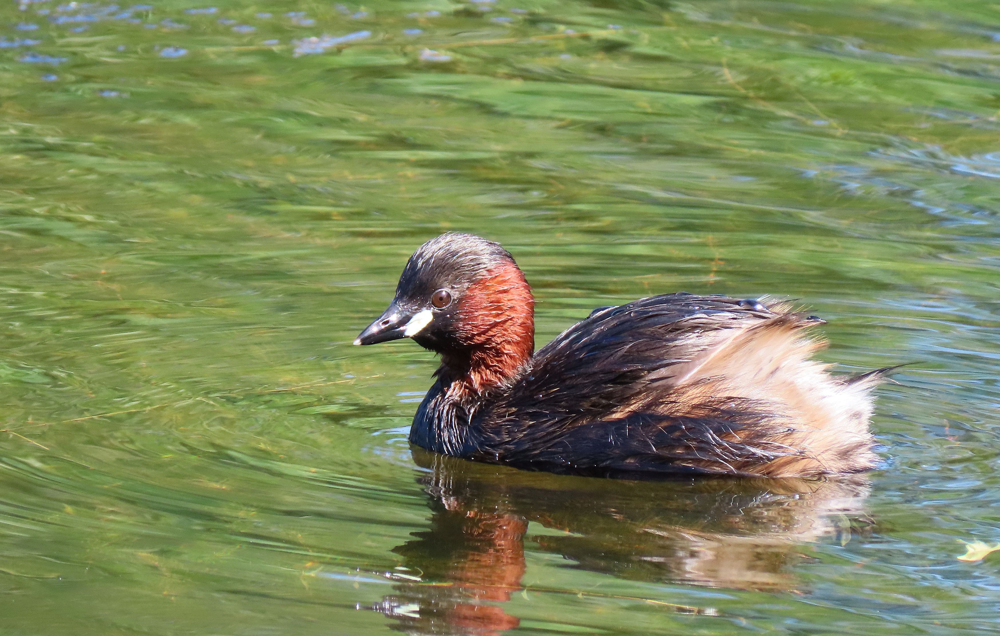

The Little Grebe is a tiny waterbird with a compact body, short neck, rounded head, and short pointed bill. During the breeding season it develops a rich chestnut throat and cheeks, while non-breeding birds are generally paler and browner. It spends much of its time swimming and diving in ponds, lakes, marshes, and other freshwater habitats, often disappearing underwater when alarmed. Compared with the Eurasian Coot, the Little Grebe is much smaller, has a pointed bill rather than a white frontal shield, and has a completely different body shape. Compared with the Indian Pond Heron, it is more compact and spends much more time swimming and diving rather than standing along the water's edge. The Little Grebe also differs from larger grebes by its much smaller size and proportionally shorter bill and neck. Unlike ducks, it has a narrow pointed bill and a streamlined body adapted for diving rather than dabbling. Its rounded body and tiny size also separate it from many other swimming birds that appear on the same ponds. Its small size, short bill, compact profile, and frequent diving behaviour therefore make it distinctive among India's freshwater birds.